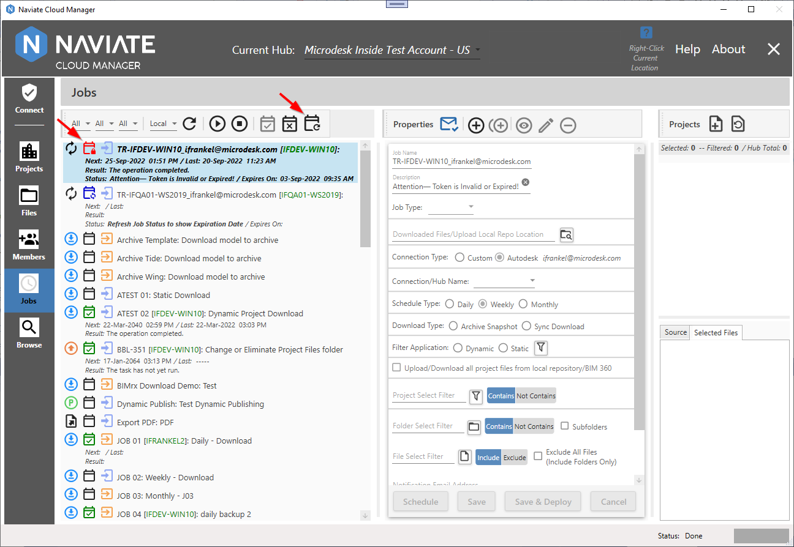
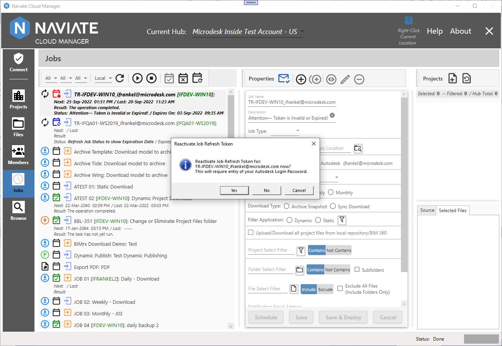
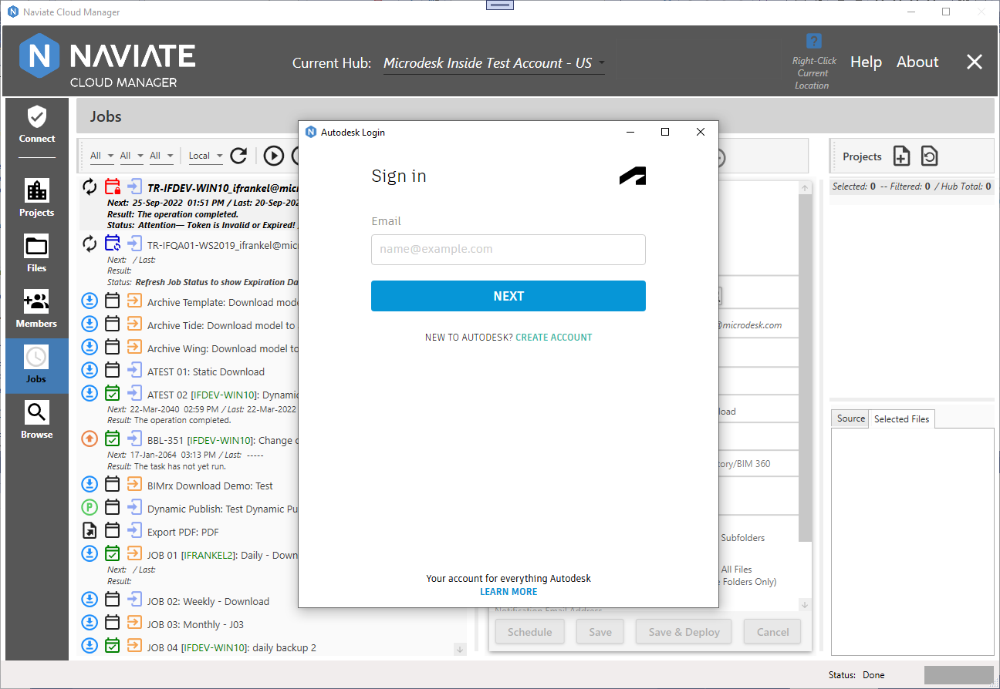
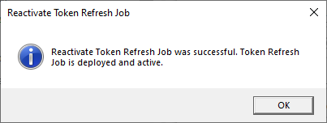
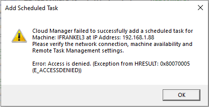

Reactivate Token Refresh Job
Token Refresh Jobs typically keep themselves active by refreshing regularly, according to the defined schedule. However, it may become necessary on occasion to intervene and initiate this process manually. This might be due, for example, to the computer from which the job was deployed having been powered down or otherwise unavailable, causing the Token Refresh Job to expire.
When a Token Refresh Job has expired, a distinctive red icon appears, along with a text description in the job definition screen for the Token Refresh Job. This description is always the same for the expired job, as opposed to the Warning and Valid statuses, which convey additional information (see following).
Reactivation of a Token Refresh Job consists of performing the following:
- Log in and enter the proper credentials to create a new refresh token.
- If already logged in with the same Autodesk® Connection credentials as the Token Refresh Job nothing more needs to be done.
- If not, go to the Connect module and login with the necessary Autodesk® Login.
- Replace the currently stored, expired refresh token with the newly created one.
- Verify the Token Refresh Job exists in the Windows Task Manager and, if it doesn't exist, to (re-)create it there. (Available as of ß Release v2.10.5.14.)
Note — Be sure you have access to any remote servers before reactivating. This might involve logging onto a VPN, for example. No additional access should be required when interacting with a local machine.
To execute the reactivation process, select the desired job and press the Reactivate Token Refresh Job button .

Once the button has been pressed, a confirmation dialog is presented:

Simply enter Yes to the dialog to continue.
Next, the familiar Autodesk® Login screen is presented and the user email and password are entered in the usual way.

Once the credentials have been successfully entered, Naviate Cloud Manager automatically copies the new refresh token to the appropriate location on the specified server (as of v2.10.5.14).
Next, it checks to verify the Token Refresh Job exists as a task and is functional on the Windows Task Scheduler. If it doesn't exist there for some reason (it may have been removed by someone using the Windows Task Scheduler, for example), it adds it. This completes the process and the following message is displayed (as of v2.10.5.14).

Note — Depending on the user's granted access rights and permissions, when attempting to add a new Token Refresh Job to the Windows Task Manager, the following message may appear:

When this happens, do the following:
- Exit from Naviate Cloud Manager.
- Right-click on the Naviate Cloud Manager shortcut or menu item and choose, Run as administrator.
- Go to the Jobs module and run Reactivate Token Refresh Job again on the same Token Refresh Job. It should now succeed.
- Exit from Naviate Cloud Manager and then run it again as usual.
Note — The Reactivate Refresh Job Token process can be executed at any time for any deployed job — regardless of the Token Refresh Job status.